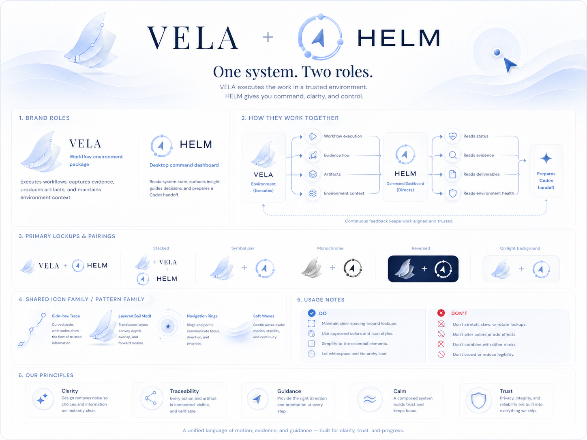

Materials
Collected sources, URLs, files, screenshots, datasets, and notes.
VELA keeps materials, evidence, claims, methods, deliverables, and Codex handoffs separate enough to review. It is a workflow package, not a desktop app.

Start with a readable folder structure. Keep private project data outside public repository copies.
Collected sources, URLs, files, screenshots, datasets, and notes.
Verified material with source, access time, status, and rights or ethics notes.
Candidate and supported statements that must remain linked to evidence.
Assumptions, coding rules, analysis plans, and reproducibility notes.
Reports, briefs, tables, figures, and status notes.
Bounded tasks for Codex or collaborators with constraints and known gaps.
Keep prompts narrow enough that review is possible.
Task:
Relevant files:
Constraints:
Expected output:
Known gaps:
Review standard:VELA can run alone. HELM can later read the same project state as an optional local board.
Portable research workflow environment for Codex.
Local board for status, evidence, deliverables, environment health, and handoff readiness.